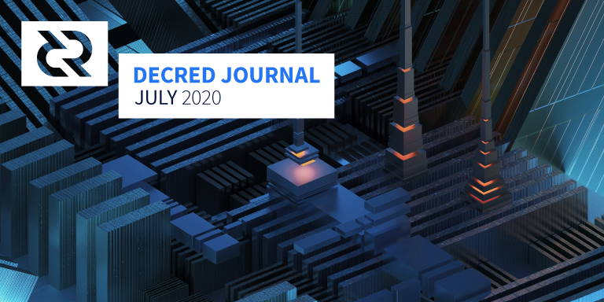
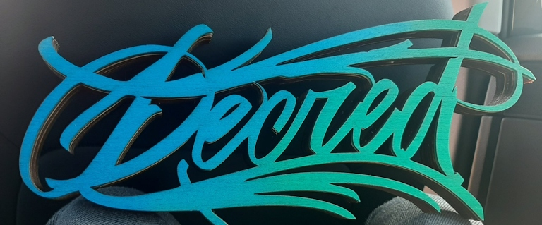

Decred月报 – 2020年7月

图片: Relay Pylons by @saender
七月亮点：
- 去中心化基金支付DCP0006(链上共识规则修改提案)将使用Schnorr签名，目前正在对其进行审核。
- Politeia部署了一系列重要的新功能，包括RFP模式天和暗模式。在CMS端，添加了责任功能。
- vspd已完成最后一项核心更改，目前正在测试网测试，很快就会登录主网测试。
- 在以SPV模式运行dcrlnd方面取得了巨大的进步，进行了大量的代码升级以匹配新的lnd版本。
- 在Reddit、Matrix和Discord频道中，出现大量有关社区外展活动的讨论-在Politeia上出现的与营销相关的提案也相应增加。
开发进展总结
除非另有说明，否则此处报告的工作仅限为“合并到主核心存储库”状态。这意味着这项工作已经完成、审查并集成到高级用户可以构建和运行的源代码中，但对于普通用户来说，还不能在发布的二进制文件中使用。
dcrd:
- 添加
notfound对等消息处理 - 增加了更多
rpcserver测试范围 - 对因分支预测而引起的非恒定时间操作的可能性进行了强化（主要基于从2017年起对btcd 的拉取请求）。PR通过简单地查看程序集输出演示了一种检测非恒定时间行为的方法。
- stake节点修剪，txscript堆栈，跟踪日志记录和链提示跟踪代码中的内存使用优化
- 导出了各种共识函数和类型，以从
txscript包中删除所有非共识代码 - 挖矿代码移动到
mining包 mempool,mining和fees转换为内部软件包，以减少维护负担。这是减少模块总数并最终达到对根模块进行语义版本控制的努力的一部分。rpcserver代码移动到一个独立的内部包cpuminer重构以提高可测试性并促进重用cpuminer重新设计以使用后台模块模板生成器来简化模拟测试网络的测试
评论优化状态：
CPU使用率的火焰图非常清楚地表明，现在事情已由IO主导，因此，剩下的最大加速无疑将来自这一方面。大约10％的GC，<1％的验证，〜3.5％的对等I / O，〜55％的磁盘I / O，〜3％的性能分析成本，〜27％的空闲时间，其余部分则很少。 (@davecgh)
共收到8个贡献者的总共53个代码合并请求，添加了11K行代码以及删除了5k行代码。
去中心化基金支出合并请求正在接受测试和代码审查，现在有350多个注释。一个非常值得注意的变化是TSPEND交易将使用Schnorr签名：
我建议我们将Schnorr签名用于基金支出，以获取它提供的一些好处，例如较小的签名和可证明的安全性。我最近清理了Schnorr代码，以使其达到项目共识代码的高标准，尽管我们希望在将来对其进行一些更改，然后再到广泛使用，并在多个去信任的环境中使用多方签名消息。 (@davecgh)
如果您有一些闲置的硬件，则可以通过对 dcrd 进行测试来提供帮助。
- 添加了可选的gaplimit参数
discoverusage - 添加了可选的account参数
listunspent ticketinfo提供钱包所有选票的详细状态信息的实现（vspd所需）- 添加了CoinJoin 参数
PurchaseTicketRequest - 添加
getpeerinfo在SPV模式下实施的命令 - 添加了新命令以更改钱包的公共密码
- bug 修复
- 备份和还原dcrlnd生成的SCB 文件（请参阅docs中的说明）
- 显示基本的LN信息
- 添加回对购票交易的解码（需要为VSP签名消息）
- 使用功能组件和CSS模块继续将代码库升级 到现代React
- 新的vspd Staking系统的初始PoC支持
- 支持简短的提案URL
- 导入兑换脚本时不需要密码
- bug 修复
来自6个贡献者的总共35个代码合并请求，添加了9K行代码以及删除了7K行代码。
多个新功能已部署到proposals.decred.org 网站：RFP模式，注释的扁平显示（帮助快速发现新注释而不在线程中搜寻它们），暗模式，简短的提案URL以及对发表评论阻止的更改每天一次而不是一个小时一次（解决此限制的方法，该限制将在迁移到tlog后端后得到解决）。
合并的更改：
- 命令行实用程序来测试RFP模式
- 改善测试范围
- bug 修复
vspd:
vspd现在已经由几个现有的VSP运营商部署在测试网上，对于他们来说部署似乎很简单，并且一切都按预期进行。
- 更新为使用最新的dcrwallet 和 dcrd
- 新的chainscan软件包，该软件包使用提交的筛选器来更有效地检测与LN节点相关的交易，并且还可以在SPV模式下运行
- chainntnfs软件包的实现以及使用嵌入式和远程dcrwallet作为链事件源的chainview软件包的驱动程序。这使我们能够进一步将dcrlnd与基础dcrd解耦，这是让dcrlnd实例以SPV模式运行的要求。
- 切换了主dcrlnd软件包以使用新的支持钱包的驱动程序，以便链IO操作现在由基础dcrwallet实例完全执行，并且dcrlnd不再需要连接到正在运行的dcrd即可执行其工作
- 为远程钱包启用和测试SPV模式（有关更多背景信息，请参见3月月报）
- 在v0.9.0-beta和0.10.0-beta之间移植的上游lnd变化-包括139个上游PR（加上一些非PR提交）
- 客户端浏览器现在提供了完整的钱包重新配置对话框
- 智能费率处理。为了使交换时间（而非订购时间）的最佳费用率所需的链上采矿费用最小化，使用了智能费用估算。为了处理需要锁定为掉期提供资金的代币的订单（当更改链上费用后可能会在下订单后很久才发生），订单必须保留足够的“最高费用率”。换句话说，如果在执行订单时BTC费用很高，则订单保留足够的“最大费用费率”，但是将匹配时的最佳网络费用用于掉期合约交易。（这是针对外展人员的一条推文）
- 改进了用于资助订单的硬币的钱包锁定，特别是对于链上交换
- 其它服务器管理功能：ban, unban, notify 和 notify all
- 对于撤销（失败）匹配的订单，该订单是自动未结算和客户端通知
- 客户端的数据库方案现已版本化，具有用于将来更改的升级基础结构
- 现在，与服务器重新连接后，客户端会自动重新订阅订单簿
- 客户端命令行界面现在提供订单
- 客户可以通过有效的订单来防止交易意外关闭
- 客户端浏览器界面修饰
- 大量bug修复和系统优化
- 更新法语翻译
- bug修复
- 获取已添加到dcrlibwallet基础库中的Politeia 提案
- dcrlibwallet中的几个bug修复
godcr是Decred即将推出的跨平台桌面SPV钱包。有关简介，请参见6月月报。
- 概述页面上的同步状态小部件
- 发送页面更新以匹配移动应用
- 更新到更新的Gio UI库
- 从所有页面中删除了硬编码的尺寸
- UI调整和修复
@planetdecred 在Twitter发布了一个简短的演示视频，演示了现有功能的运行方式（概述，连接，发送，接收，历史记录）。
其它:
- decredpower.com迁移到了更灵活，更易于更新的Hugo。它还具有一个新的新主题（不用担心，复古主题仍然存在！）。
- 有一个待处理的拉取请求，向Trezor的javascript库添加了Decred支持
- @kozel发布了如何从源代码构建最新的Decred软件并在Raspberry Pi上运行的详细教程
人员
欢迎新到来的首次贡献者，他的代码已合并到主代码库中： @Kifen (dcrwallet)。
祝贺新承包商获得了Decred Contractor Clearance（DCC）： @rstaudt2 (开发)。
截至8月1日的社区统计信息:
- Twitter 粉丝: 40,637 (+120)
- Reddit 订阅: 9,875 (+21)
- Matrix #general 用户: 124 (-498) *
- Discord 用户: 1,372 (+84)
- Telegram 用户: 2,520 (-87)
- YouTube 订阅: 4,150 (+40), views: 151K (+3K)
- Facebook 粉丝: 3,655 (+0), likes: 3,305 (-6)
- LinkedIn 粉丝s: 862 (+26)
- GitHub dcrd 星星: 550 (+1), forks: 240 (-1)
* 聊天室已于7月9日进行了升级，有关详细信息，请参阅 社区讨论。
您可以在Decred Journal中查看报告的所有社交媒体数据点的图表，以及其他更多信息（原始数据在同一存储库中）。另一个好的资源是dcrextdata项目的社区统计信息页面-它跟踪较少的帐户，但具有更好的数据分辨率和交互式图表。
治理
7月份，社区开发基金获得了13050，并花费了16073。以7月份的每日 DCR/USD 汇率 $15.13这是收到的$197花费的$243以5月份的每日平均价格$16.05该月完成工作的美元费用为$258。截止到8月1日，基金余额为630766DCR。（约1070万美元，汇率16.92usd）
7月提交了7份提案：
- @lindseymmc提出的以每年3,500美元/月的价格继续提供PR服务的提案获得了90％的支持（25％的投票率），比第一个提案的72％的批准要高。
- 提案花费15,000美元创建增强现实海报。
- 提案涵盖Matrix，Discord，Telegram和Politeia的审核费用，最多9,000美元，预计6个月的费用为4,800美元。这项工作已经完成并付了钱，建议将其正式化并限制可以为此支付的费用。
- 提案在两个旅行预订网站上提供DCR作为付款选项（3万美元），以及一些促销活动（2.15万美元）。
- 提案将$ 10,000美元用于与Reddit 帖子相关的一系列营销活动（包括付费转推/背书和广告）。
- 提案 为10个DCR /段子创建20个社交媒体段子。
- 提案 举办一系列具有DCR奖励的扑克游戏（每月300 DCR）。
这些提案中有两个与以DCR计价的预算有关。
同样在本月，@ Checkmate 将更改DCR发行的问题提交给Reddit 民意调查，以期解决问题。该民意调查吸引了87票，反对更改DCR发行政策的任何进一步投票均获得65票。
有关第一个问题的更多详细信息，请查看《 Politeia Digest》第33期，有关其他新提议的详细信息，第34期将很快发布。
网络
全网算力: 7月份的全网算力 以394 Ph/s 的速度开始，以307 Ph/s的速度结束，最低为307 Ph/s，整个月达到582 Ph/s的峰值。截至8月1日的池算力分布（大约）：Poolin 33％，UUPool 26％，lab.antpool.com 9.6％，BTC.com 3.4％，Luxor 0.9％，F2Pool 0.8％，BeePool 0.09％，CoinMine 0.03％，Suprnova 0.02％，其他〜26％。
Staking: 30天平均票价 为144.3 DCR（+4.9）。票价在 137.1-155.5 DCR之间变化。锁定金额为575-588万DCR，相当于参与 PoS 的占可用供应量的48.98-50.06％。
节点: 整个 7月 每个dcr.farm平均有134个公共侦听节点，总共241个节点。7月的平均版本分布：51％dcrd v1.5.1、10％dcrd v1.5、6％dcrd v1.6开发版本，5％dcrd v1.5开发和RC版本，1.3％dcrd v1.4、7％dcrwallet v1.5.1、1％dcrwallet v1.5、0.6％dcrwallet v1.4和其它18％。
整合
-
NovaDAX交易所 添加了 BRL，USDT，BTC和ETH的DCR交易对。
-
XT.com最初于2018年11月列出DCR， 他们现在已将DCR交易对改为USDT和杠杆模式。
-
Decred终于不再是“比特币叉”在 CoinMarketCap简介里。
请注意：Decred Journal的作者不了解上述任何服务的可信赖性。在将您的个人信息或资产信任给任何实体之前，请先进行自己的研究。
社区商店
Decentralized Boutique 宣布推出“Decred Grenade”，可作为数字下载在家中3D打印，供那些希望避免在邮件中收到手榴弹状物品的人使用。
@OfficialCryptos 推出了浮夸的Decred心形贴纸。
外展活动
市场营销主题在Reddit和Matrix进行了大量讨论，尤其是像Decred这样的去中心化项目的开发基金应在其中扮演什么角色。
@Checkmate一直在Reddit上激起基层宣传想法，定期和不定期的帖子引发了讨论，这些讨论也扩散到了其它与营销相关的讨论帖子中：
- @mrbulb在星期三发布了一个研讨会，邀请人们与他一起探讨叙事发展的四个关键阶段。
- 周五的前瞻思维（FTF）7月3日-Artwork，提出了艺术竞赛的概念。
- 7月5日，考虑了硬件钱包和staking。 @ jy-p 知道有一位新开发人员正在从事这种工作。此版本还展示了空投参与者的史诗般的怒吼，多年来，他们在DCR和XMR之间反弹，于2019年开始涉险，但现在完成了。@bee质疑了多个令人惊讶的说法，而@ jy-p则揭穿了这些事实。
- FTF 7月17日讨论差异化主题，探讨了Decred脱颖而出的不同方式。
- @Haon共享了一个基于poliiteia的透明管理dapp的概念。
- FTF 7月24日专注于内容放大 -周期性模式以及向正确的人传达正确的消息。
- 受周日怀疑的影响，在7月27日星期一，@ Checkmate放弃了基层营销讨论的第二部分 - 最难的部分。这篇文章提出了3个观察结果：迄今为止，排名第一的营销预算执行不佳，排名第二的机构和领导者不存在，排名第三的在营销中产生了不正当动机。这些引起了许多社区成员的共鸣（到目前为止，已有40条评论），甚至还把@Dustorf 带回了大家，以分享他的观点。
如果您使用LinkedIn，请查看新的dcrdex 展示页面。
警告：Facebook上有一个奇怪的Decredcash帐户，其追随者数量惊人（2.5K）。一些最新的帖子看起来合法，但是所有者未知，“ 关于”页面上有可疑的帐户详细信息，并提及“ masternode系统”。
Monde PR在7月份成就：
- created and pitched 4 story ideas to personal finance, business, crypto and tech publications
- secured two email Q&As with crypto and mainstream publications
Monde PR保证的新闻报道：
- @richardred在ValueWalk中发表的一篇思想领袖文章，谈到经济衰退期间自筹资金的加密货币的弹性
- 《福布斯》上的一篇文章，重点介绍@ jy-p关于比特币价格波动的评论。这些评论还包含在BitPush新闻中的一篇文章中，该文章与4个新闻媒体（包括Chain News）联合发表。
- Cointelegraph Italy和Corriere Romagna 报道了@ jy-p在Cointelegraph中有关PayPal加密货币传言的评论
Monde PR的第二阶段提案已获批准：
感谢所有投票并提供反馈的人。我非常期待继续进行公关工作，并与社区合作以提高对该项目的认识。Lindsey McConaghy（@ l1ndseymm）
活动
参加：
- 7月2日 - Legaltech Talk #7 - 互联网。@elian与哥伦比亚的法律黑客组织和哥伦比亚的BlockchainEx讨论了金融科技法规，拉塔姆的加密货币生态系统以及创新的挑战和机遇。听众提出的问题涉及墨西哥，阿根廷和哥伦比亚的监管环境，合作机会和教育资源。(视频)
- 7月3日 - Cryptographic Friday -互联网。@elian与@anibalcripto（委内瑞拉加密货币影响者），@ EzioRed（西班牙语为Cointelegraph的编辑）和@ernestocontrer（Dash Core Group BizDev）一起参加了Decred和Dash的区块链治理小组。这是连接委内瑞拉生态系统并展示Decred和Dash之间差异的好机会。
- 7月8日 - Youth Entrepreneurship - 互联网。该活动由摩洛哥青年决策者组织组织，@ arij在会上讨论了区块链技术及其将如何改变工业领域。演示耗时一个小时，再加上半小时的问答。刚开始时，只有16位参与者，但更多人参加了网络研讨会。(报告)
- 7月9日至11日 - Campus Party - 互联网。这是来自世界各地的演讲者进行的首次在线校园聚会。Decred的BR团队进行了3次演讲，分别来自Clara Nobre（“ 开源和加密货币：团结社区和值得黄金的字节！”），Rafaela Romano（“ 区块链货币化：您的想法一枚硬币”）和Fernando Guisso（“ 即时付款”）使用加密货币”）。
- 7月10日 - Cryptographic Friday - 互联网。@adcade和来自墨西哥，智利和委内瑞拉的加密社区的妇女一起参加了会议。小组讨论了加密货币项目，加密文化，有关每个人如何起步的个人故事，有关行业发展的提示，以及有关加密中性别差异的一些讨论。该活动由Binance赞助，并由@anibalcripto和@EzioRed主持。(照片)
- 7月15日 - ¿Segura, adaptable y sustentable? - 互联网。Instagram Live与@adcade和律师Hector Ibarra讨论加密货币和Decred的三个主要特征：安全性，适应性和可持续性。围绕探索的每个特征，与墨西哥现行法律进行了一些比较，以及加密如何使它们无用。还研究了在何处以及如何购买DCR。
- 7月22日 - Crypto Resources Academy - 互联网。@elian讨论了加密骗局，存在哪种骗局，如何发现它们，如何预防以及总结了加密货币行业中最大的黑客事件。本次活动上宣布Cointelegraph在西班牙和livestreamed在YouTube上。
- 7月22日至23日 - Blockchain Land - 互联网。@pablito和@camilolwi 与MakerDAO和Colony一起在DAO上进行了讨论。第二天，@ adcade发表了一个演讲， “谁为加密货币开发付费？”，这是一个20分钟的课程，讨论如何为Decred做出贡献。（完整的12小时视频，@ adcade的演讲）
- 7月23日 - Hablemos Decred 7 - 互联网。来自比特币大使馆酒吧的@elian和Lorena Ortiz讨论了骗局，如何预防骗局以及如何安全地存储加密货币。 (视频)
- 7月30日 - Descentralizar 2020 - 互联网。Descentralizar是由阿根廷最大的加密货币协会Bitcoin Argentina举办的虚拟活动，聚集了开发商，企业家，投资者和公众社区。Decred是活动的赞助商。
- 7月31日 - Decred Virtual Meetup - 互联网。@ eSizeDave，@ Checkmate和@Zohand在Zoom中主持了此活动，并向社区更新了Decred的最新发展，即将发布的版本，一般市场分析以及Decred的最新链上分析发现的见解。
媒体
如果您看到古老的thedecreddigest.com崩溃了，请不要慌张，它已经移至thedecreddigest.org了。
精选文章：
- 美联储: 一场操纵游戏 @jy-p (blog.decred.org) - triggered a debate
- 从源文件构建Decred节点 @kozel (medium)
- Decred 链上迷你酒吧1：@PermabullNino的相对MVRV比 (medium)
- Decred 链上迷你酒吧2：@PermabullNino提供的HODL功能 (medium)
- Decred 链上迷你酒吧3：@PermabullNino的难度(medium)
- FernandoQuirós（西班牙，es.cointelegraph.com）到目前为止，已有20多个开发人员为Decred做出了贡献。
翻译：
- 为什么我们需要Decred：一种包容性的赚钱方法- @adcade 用西班牙语撰写
- 2020年6月的Decred Journal被翻译成阿拉伯文（@arij，由@ Abdulrahman4审阅），中文（@Dominic）和西班牙文（@francov_，由@pablito审阅）。谢谢大家的坚持！
视频:
- Decred 双周报 - 7月13日 @Exitus (youtube)
- Decred 双周报 - 7月31日 @Exitus (youtube)
- Decred网络研讨会：由Decred Australia（youtube）主持的社会学，工作的未来和激励措施的协调
- Decred和Decred Society（youtube）的公开分类帐-dcrdata区块浏览器之旅
- Decred 价格分析勇敢的新硬币（2020年7月16日）(youtube)
音频:
- Decred in Depth 28: @Checkmate和@PermabullNino谈论商店，受@ jy-p关于该主题的文章启发，构造了受操纵的经济体系Decred基础，并向社区提供了他们各自提案的最新进展。 (libsyn, soundcloud)
- Decred in Depth 29: @Ammarooni再次出现DiD来讨论历史上的通货膨胀货币政策，寻找存储价值的方式以及Decred建立在比特币价值主张上的方式。 (libsyn)
- Rough Consensus 9: 早期加密货币牛市？@ mr.black，@ Checkmate和@PermabullNino讨论了早期加密牛市的可能出现以及可能支撑其发展的相关叙述，包括DeFi，抵押，杠杆，收益追逐和硬资产。 (libsyn)
- Bankless 20: 以太坊与hris Burniske合作。Chris强调了治理在加密货币中的重要性，并以Decred为例：“从长远来看，良好和公平的治理，涉及人的事物，至少能使人们表达意见的声音，是生存和复原力的关键，即使他们可能会因为一点点分析瘫痪和过于分散而减慢每周的执行速度。” (bankless.substack.com, youtube)
游戏:
艺术品：
- @ aithzakaria1发布了新图纸（突出显示）：宇航员，水晶蝴蝶，金钥匙，鲍勃·鲍勃
- @OfficialCryptos：装甲蜥蜴，蝴蝶和其他一些的铅笔版本
- @svitekpavel 宣布了一个新的资料库，以收集与Decred相关的艺术作品，该艺术作品可以免费使用，并尝试包含原始源文件（AI，PSD等），以便在以后的创作中可以对艺术作品进行编辑或重用。第一个要包含的是u / BitartZone制作的蝴蝶DCR图形，它是从DCR Bounty帖子的茧中出现的。

图片: @aithzakaria1 的木雕
社区讨论
通讯系统新闻：
- 大多数Matrix会议室已升级到版本5，这可以解决加入会议室时出现的一些小问题。由于旧会议室的成员不会自动加入新会议室（他们必须接受邀请），因此升级的结果是用户数量急剧下降（例如，＃general从622变为124）。另一方面，这揭示了过去3周内活跃的用户数量。
- 用于Matrix协议的Riot桌面客户端及其开发公司New Vector已更名为Element。所做的更改还包括一些UI更新，添加了房间预览，改进的通知等。
- 对于Riot Desktop用户从riot.im加载应用程序的重要通知：“在接下来的几周内，您仍然可以通过riot.im/app在网络上使用Riot。请确保您尽快登录帐户以交叉签名新的登录会话，并确保您有权访问加密的邮件。”
- TestFlight 上发布了iOS的点对点Riot的第一个实验版本。
- RiotX（从头开始重写Riot Android）已经退出Beta版，获得了VoIP呼叫和Widget支持，并且还更名为Element。在F-Droid和Google Play上可用。
市场
6月DCR交易价格在13.70-16.28美元 / BTC 0.00132-0.00177之间。每日平均价格为$15.13。
根据CoinMarketCap的数据，截至8月6日，新的Binance DCR / USDT对以24小时5万美元的交易量迅速跻身前十。在巴西的NovaDAX上，新的DCR / BRL在8月4日观察到的每日交易量为$ 5K的交易中占据主导地位。
@PermabullNino开始了新的Decred On-Chain Mini Pub系列，他一次探索一个指标。第1部分介绍了从BTC和DCR实现的上限得出的几个新指标，这些指标反映了持有人的心理和市场过高/过低的估值。第2部分结合了已实现的限额和锁定在票证池中的供应百分比，以得出DCR独有的两个新指标，它们可以很好地匹配历史最高点和最低点。第3部分介绍了Decred的难度带，并得出了针对美元和BTC的新价格指标，该指标已成为熊市价格的吸引者。像往常一样，所有用于生成图表的代码都在GitHub上开放，因此任何感兴趣的研究人员都可以重现结果或在其顶部进行构建。
@Checmkate 观察到，“现在有大量的Decred链上指标正在亮起”。
相关外部信息
CloudFlare的遭受了记下了许多依赖于它的网站的问题，效果可以看出比特币交易量，大概是因为从依赖CloudFlare的网络钱包的交易是不可能的。
超过75家区块链和加密货币行业的公司不介意获得美国政府支持的工资贷款。其中包括Consensys（以太坊）和Electronic Coin Company（Zcash）等知名（并得到资金支持）的公司，这些公司已经享受（部分）ZEC区块奖励的20％。对于认为以政府资助的贷款与加密货币的理想背道而驰的人，以及认为如果自己避免这样做而别人却自救的话，将使他们处于不利地位的人，意见分歧。这表明，即使订购良好的ICO或正在进行的20％的区块奖励也不能保证安全和可持续的融资状况，还必须管理支出并在可能的情况下建立一些储备。
Josh Concinnati 宣布辞去Zcash基金会执行董事一职。推辞辞职的“信函”引用了诸如“在开放系统中，那些帮助架构师赋予组织权力的人应该拒绝使用它的原则”（Josh参与了为基金会获得未来ZEC集体奖励的工作，该基金会只有一笔津贴） （目前安排中的ECC）。这封信还表明，乔希（Josh）离开的主要原因是，他与ECC的关系以及与他们合作的能力在商标争议期间受到了不可挽回的损害，这是Zcash开发资金最初20％的谈判之后的一部分。 ECC结束。
乔什还分享了一条适用于更广泛的加密货币的建议，并断言：“当心不懈，未经审查的实证主义和近乎宗教的狂热”，“欢迎认真的批评”，“不要将狂热的初创主义纳入协议的核心，并抵制其他人这样做的企图”，以及“质疑影响力真正存在的地方和掌握者”。在原始帖子中将其完整检查。
Reddit的“大规模规模化烘烤”（关于规模化Reddit对以太坊的使用）引起了相当大的关注，许多贡献都在8月份进行评估。
有人抱怨开发人员不关注的Twitter等平台上的以太坊的社会治理程序，并呼吁建立一个多以太坊的“以太坊治理平台”，以有效衡量以太坊社区的情绪，以确保他们的声音得到体现”。
Ravencoin遭受攻击，该攻击利用协议错误在发行时间表之外无限制地打印RVN。通过一次请求请求启用了攻击来自没有其他历史的开发人员，并在合并到Ravencoin软件的生产版本中之后被利用了一段时间。一旦漏洞被宣布并发布了修复程序，新的攻击者便开始利用它，而网络则在第一个激活窗口内迅速更新足够的矿工。这些新攻击者铸造的大部分RVN随后被烧毁，因为其中至少一个泄露了一些个人身份信息，Ravencoin的主要开发商威胁要（实际上确实）牵涉到执法部门。攻击进行了一段时间，定期铸造RVN，将其混合并出售-现在，流通的所有RVN的4％是以这种方式创建（并出售）的。由于额外的RVN不在计划的发行范围内，Ravencoin社区现在必须决定如何在计划的发行限制内容纳额外的RVN。@BlockCommons还涉及了该主题Twitter的。这次攻击提醒我们在2018年12月介绍的BTCP漏洞，其中一位未经可靠跟踪记录的开发人员引入了一个漏洞，该漏洞被用来打印大量硬币。这再次提醒人们，在技术和社会层面上，共识守则都需要极其谨慎。
当Twitter被黑客入侵以传播比特币骗局时，成千上万的人争先恐后地向Elon，Barrack和Kanye发送他们的BTC-期望这些名人能为他们加倍。Coinbase 阻止了超过1,000名客户进行这些交易，这表明也许有些人不控制自己的钥匙可能会更好。
有人冒充 Cointelegraph记者伪装成要付款的故事，以欺骗人们。
由社区众筹系统（CCS）资助的Monero研究人员发现了一种使用公认的密码原语进行BTC / XMR原子交换的方法。该方法不使用哈希时间锁定合同（HTLC），后者在许多形式的原子交换中很常见，但在Monero上是不可能的。相反，交换的所有逻辑都在比特币端运行。作者告诫说，尽管现在有可能实施，但这在技术上将具有挑战性，但这项工作可能会出台新的CCS提案。
Binance 宣布他们将添加“冷赌注”，尽管尚未宣布任何代币。尽管“灵活抵押”允许立即提款，但参与“冷抵押”的客户将承诺在规定的时间间隔内锁定其资产，并对提早提款进行处罚。
硬件钱包生产商Ledger 宣布其营销数据库已被破坏，泄露了100万个电子邮件地址以及9,500个客户的全名和邮政地址。保证您的个人数据不会被泄露的唯一方法是永远不要共享。此事件突出了在不损害隐私的情况下获取硬件钱包的挑战。可以匿名下载的软件钱包没有这种问题。
俄罗斯正在通过第一个赋予加密货币合法地位但禁止将其用作支付方式的法案来赶超监管加密货币。
美国参议院提出了一项新的反加密法案，该法案将强制执法后门，并禁止提供任何端到端加密服务。
关于月报
这是Decred Journal的第28期。有关所有问题，镜像和翻译的索引，请参见此处。
在经过最少的健全性检查之后，来自第三方的大多数信息都会直接从来源中继。Decred Journal的作者无权验证所有声明。请当心诈骗，并自行进行调查。
感谢 (字母排列):
- 写作和编辑: bee, chappjc, degeri, elian, l1ndseymm, richardred
- 评论和反馈: adcade, buck54321, davecgh, emiliomann, jholdstock, jz
- 封面图片: saender
中文社区
- 社区网址
- 微博
- 微信公众号
- 中文电报群
- bilibili频道
- QQ群号-258412796
欢迎同时关注英文月报了解更多最新消息